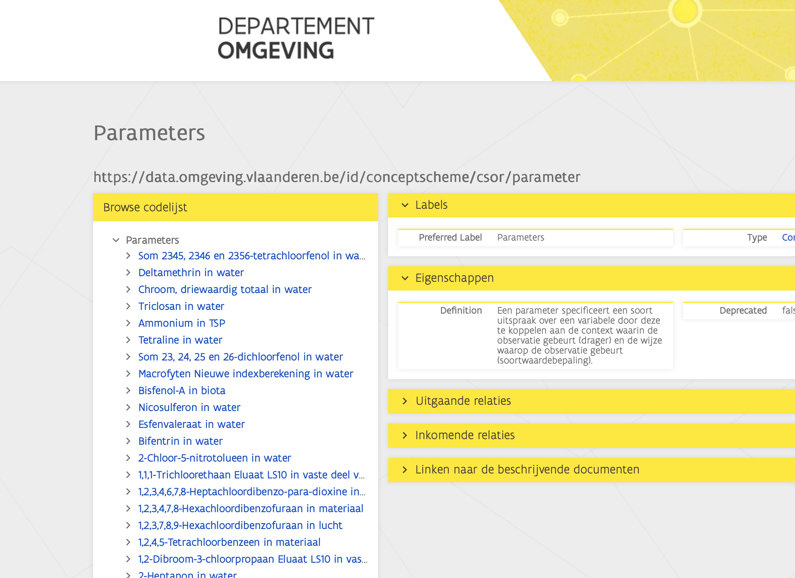
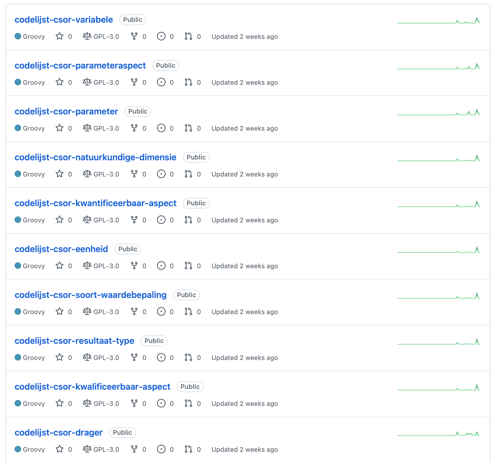
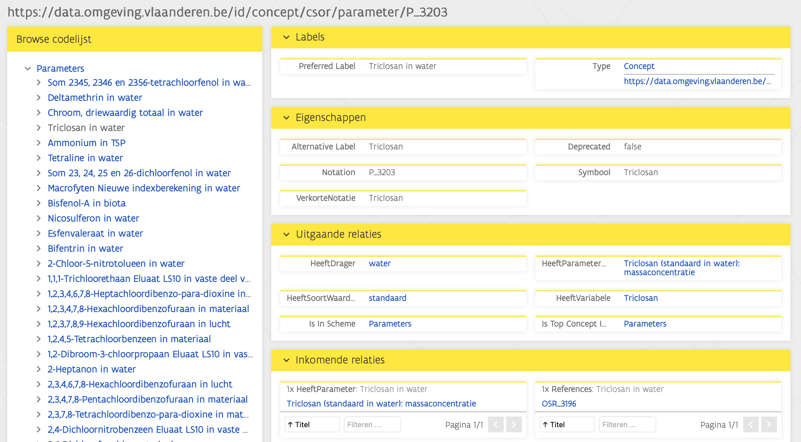
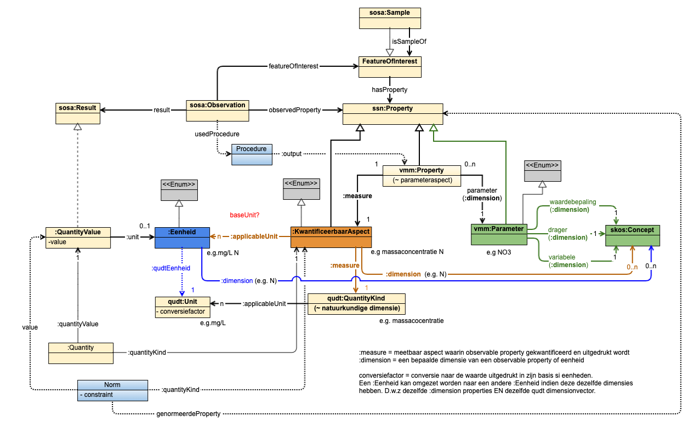

Maxim Van de Wynckel
Departement Omgeving · Vrije Universiteit Brussel
1 september 2026
Subjects worden beschreven met predicates die naar objecten verwijzen
CURIE (Compact URI) geeft prefixes aan een URI
Niet atomaire objecten kunnen op zichzelf ook subject zijn
Anyone can say anything about any topic (AAA)
Informatiemodel beschrijft wat het business domein omvat en de achterliggende betekenis
Datamodel beschrijft hoe data van het informatiemodel kan gecapteerd worden
Codelijsten is de brug tussen het informatiemodel (business inhoud en vereisten) en hoe zich dit semantisch in data verhoud
Een technisch beheerder moet alsook de nodige kennis hebben om afnemers en business te kunnen bijstaan in vragen en beslissingen
Parameters

Parameters, Aspecten, Variabelen, ...

Web van dimensies die de totstandkoming van codes beschrijven


SKOS is een W3C-standaard voor het modelleren van taxonomieën, thesauri en andere gecontroleerde vocabularia.
skos:Concept)Conceptuele of intellectuele representatie van een idee of object. Een concept kan worden beschreven met labels, definities en relaties met andere concepten.
skos:ConceptScheme)Een aggregatie van meerdere concepten die een bepaald domein beschrijven.
skos:broader, skos:narrowerskos:relatedskos:exactMatch, skos:closeMatch, skos:broadMatch, skos:narrowMatch, skos:relatedMatchskos:inScheme: geeft aan dat een concept deel uitmaakt van een bepaald conceptschema.skos:hasTopConcept: geeft aan dat een concept een topconcept is binnen een bepaald conceptschema.Linked Data zorgt dat concepten uitbreid kunnen worden met extra metadata. Voorbeelden zijn:
Vaak voorkomende predicates in codelijsten beheerd door dOMG
relevantCodeList, min, maxriepr:isVerplicht: geeft aan dat een concept verplicht is in een bepaald proces of context.riepr:isMeervoudig: geeft aan dat een concept meerdere keren kan voorkomen in een bepaald proces of context.skos:
name: rie-iepr # IRI-basis
rules: [skos, dcterms, riepr] # N3-regels
source:
codelijst_csv: [...] # 29 CSV-bestanden
context: context.json
metadata: {...} # DCAT + versiebeheer
prefixes: {...} # CURIE → IRI
skos — outputpad, 7 formaten (ttl, jsonld, json, csv, nt, xlsx, parquet)source — welke CSV's, welke JSON-LD contextmetadata — DCAT-metadata + versiebeheer t.o.v. vorige publicatieprefixes + deploy — CURIE-prefixes, triplestoreJSON-LD context: CSV-kolom → RDF-predicate
{
"_id": { "@id": "@id", "@type": "@id" },
"prefLabel": { "@id": "skos:prefLabel", "@language": "nl" },
"broader": { "@id": "skos:broader", "@type": "@id" },
"code": { "@id": "skos:notation" }
}
Elk CSV-bestand in src/source/ = één codelijst (skos:ConceptScheme)
_id,_type,prefLabel,notation
conceptscheme:rubriek_type,skos:ConceptScheme,Rubriek types,
riepr-rubriek-type:vlarem,skos:Concept,VLAREM,vlarem
prefLabel, definition, broader, relevantCodeList, isVerplicht, ...npm run generate_skos (01_codelijst_skos_from_csv.js)
context.json)relevantRiepr-referentiesDiff met de vorige publicatie (versioning.release_url):
dct:created + adms:status = activedct:modified + dct:isVersionOf (lineage)adms:status = withdrawnnpm run csv:check — consistent aantal kolommen per CSVrelevantRiepr-referentie → build faaltvalidation_result.json → build faaltDe PO vraagt wat hij/zij moet doen om een (fictief) "chemische waterzuiveringsinstallatie" toe te voegen met dezelfde eigenschappen als een gewone waterzuiveringsinstallatie
De PO wil een eigenschap toevoegen (fictief) "Meetgevoeligheid" aan een controleinrichting met volgende selectiemogelijkheden "licht gevoelig", "middelmatig gevoelig", "zeer gevoelig"
Het is 2028, we merken dat sommige exploitanten negatieve percentages ingeven. De PO vraag hoe we dit het beste oplossen.
Bijkomend willen we ook limiteren wat de nauwkeurigheid is van de hoogte van een schouw.